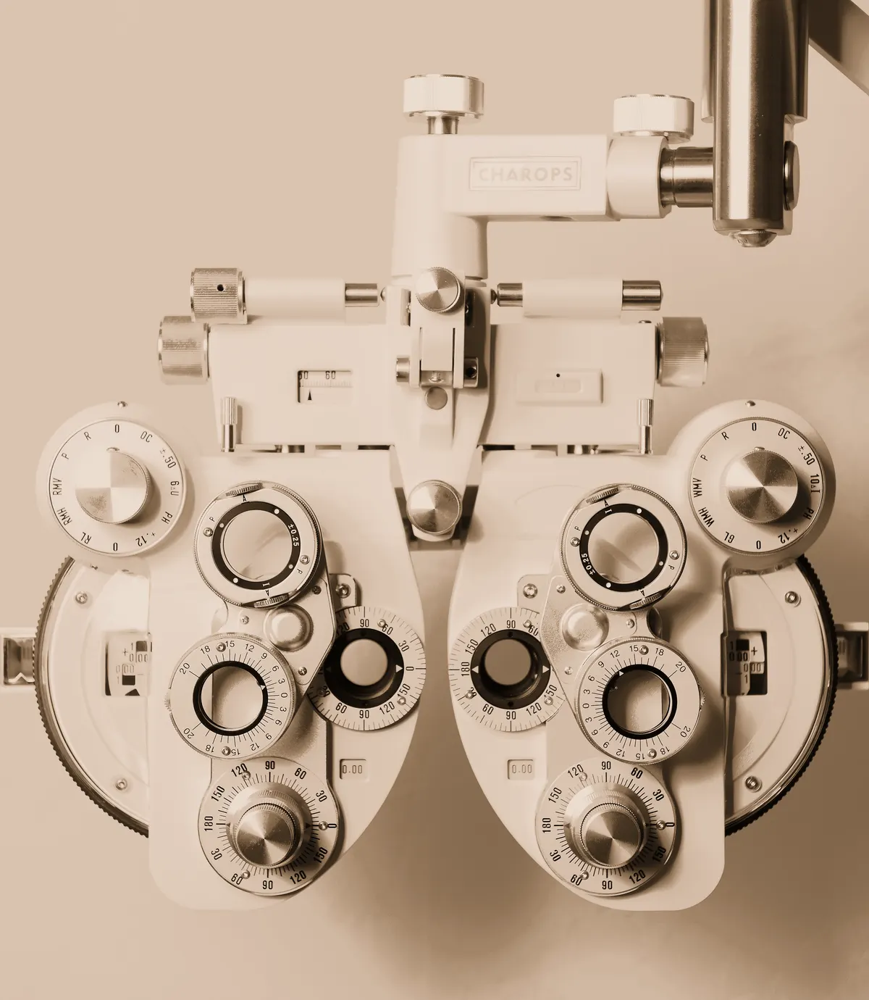
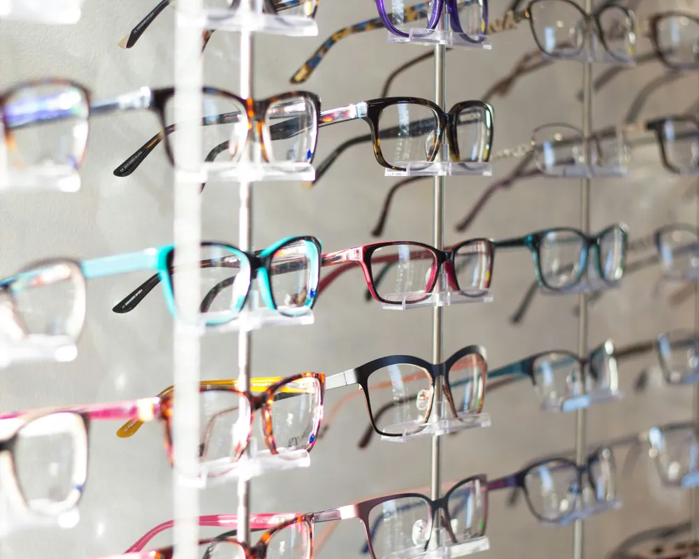
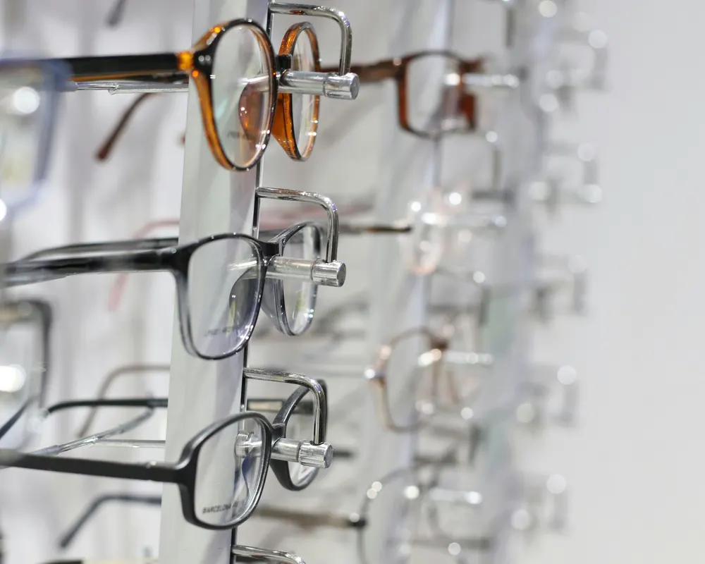
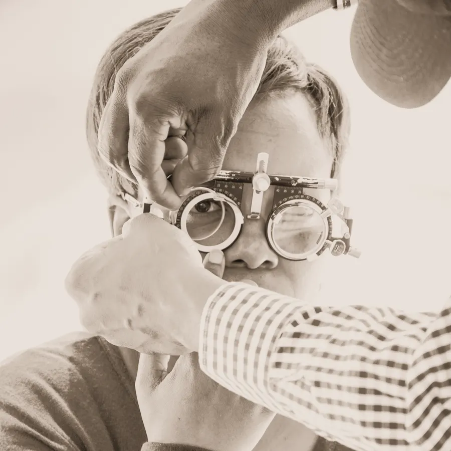
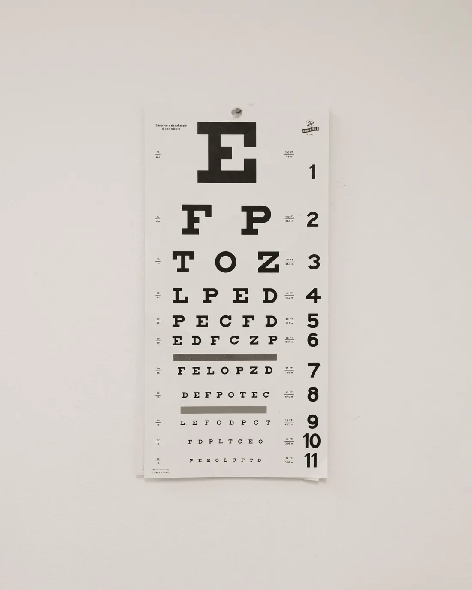

Ikusmena zaintzea
Armazoiak
Tolosan
Zure begiak eta betaurrekoak, leku berean
Kabinetean graduatzen zaitugu, eta irtetean, armazoia aukeratzen duzu, graduazioa eginda. Betaurrekoak puskatzen bazaizkizu, hemengoak ez badira ere, ekarri eta begiratu egingo dizkizugu.
Nola iritsi

Armazoiak
Aneren hautatuak
«Metaliko biribilak eta kareya asko eskatzen dira. Etorri zure betaurreko zaharrekin eta antzeko zerbaiten bila gabiltza.»
Sakatu betaurrekoak eta probatzeko gordeko dizkizugu.
Bat eskatu probatzeko
Kabinetean
Zer egiten dugu kabinetean?
Hitzordua eskatu01Ikusmenaren graduazioa
Oftalmologo batek begiratu behar duen zerbait ikusten badugu, esango dizugu.
02Lentillak
Lentillak jartzen eta kentzen erakutsiko dizugu, eta nola doazkizun ikusteko hitzordua emango dizugu.
03Konponketak eta doikuntzak
Torlojuak eta plaketak aldatuko ditugu, eta estutzen dituzten betaurrekoak doituko ditugu. Ekarri betaurrekoak, hemengoak ez badira ere.
Berrikuspena
Noiz izan zen zure azken azterketa?
Aukeratu urtea eta esango dizugu ea tokatzen zaizun.
Aukeratu zure azken berrikuspenaren urtea
Bista urtean behin berrikustea gomendatzen dugu.
Hitzordua eskatu berrikuspenerako
Hitzordua eskatu deitu gabe
Aukeratu zer behar duzun eta zein egun ondo doakizun. WhatsApp bidez bidaltzeko idatzitako mezua aterako zaizu, eta orduarekin erantzungo dizugu.
Ordutegia
Astelehenetik ostiralera, 9:30etik 13:30era eta 16:30etik 20:00etara.
Larunbatetan, 10:00etatik 13:30era.
Non gauden
Korreo kalea 0
20400 Tolosa
Deitu edo idatzi
943 00 00 00 · WhatsApp 600 00 00 00
Telefonoa eta WhatsAppa, denda ordutegian.